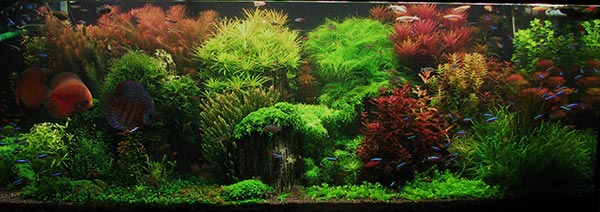
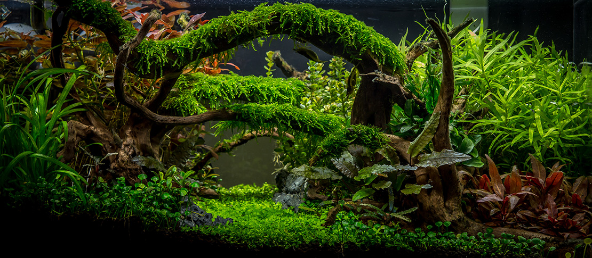

Welcome to Blake's Aquarium Advice!
Although it is not discussed very much, there are health and emotional benefits that come from having an fish tank or aquarium. ~MentalHelp.net

So, you want to set up and aquarium, but you're not ENTIRELY sure how to do it... or, maybe you've heard countless horro stories, including ones concerning:
- Fish eating each other
- water smelling horrible
- so much cleaning of the tank and glass that you NEVER are able to enjoy actually having the tank!
- your friend spent alllll this money on fish, but then they died within the first month. Spontaneously! NO CLUE WHAT HAPPENED!
It's true that owning an aquarium can be quite the headache- heck, it still is for biologist working at national and state aquariums!- but with a little guidance and some common sense, we'll make setting your first tank easy... or, at least a lot less a pain in the butt.
First thing you need to know is that NOTHING is magic, and EVERYTHING has a non-mystical cause.
| Problem |
Most Likely Cause(s) |
Solution Resources |
| Fish eating each other |
- You have aggressive fish incorrectly paired with tank mates
- You have too many fish for the space provided by your aquarium
- Your setup isn't correct for the type of fish you have
- Maybe you have a mixture of the above
|
|
|
| water smelling horrible and or cloudy water |
- You're overfeeding your fish
- You don't have proper filtration on the aquarium
- You've got too much animal for your tank size
- You haven't balanced fish to plant life and beneficial microorganisms (don't worry - microorganisms are a piece of cake
|
|
|
| so much cleaning of the tank and glass that you NEVER are able to enjoy actually having the tank! |
- Too many fish for the tank
- You're Overfeeding your aquarium
- you haven't balanced your aquarium's animals with plantlife!
- If you've done the above and are still having problems, it could be that you're giving your aquarium too much light, or that it's getting the wrong TYPE of light... as in wavelength!
|
|
Read up on Keeping Aquarium Plants.It's a little more to learn, but SO WORTH IT IN THE LONG RUN! |
Spontaneously Dying Animals |
- You've shocked your Aquarium's system and caused it to crash.
|
- You changed out the water, but you didn't replace water removed with water that's the same temperature as the water in the tank... and you animals went into shock and died.
- You bought a BUNCH of new fish at once, and they presented the tank with so much bio waste, that a bloom of beneficial microorganisms occurred. Though beneficial, the organisms that handle animal waste in water produce poisonous intermediates, and if one part of the cycle doesn't grow as quickly as other parts, your tank will get poisoned! This is often what's referred to as an Aquarium "Crashing"
- Similar to the previous point, you took SO much of the old water out in a water change, that your beneficial microorganisms were wiped out, sending your tank back in time to then it was just being set up... Only, your tank isn't old. It's established, and thanks to your well-intended water change, it's on its way to Crashing!
|
|
<
